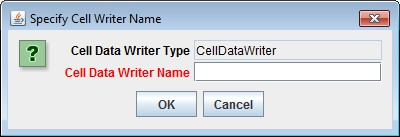
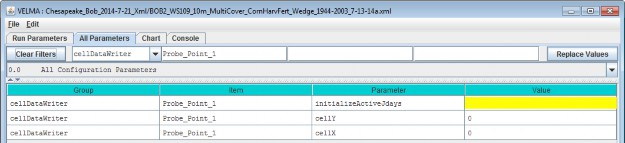

Cell Data Writer Items
Cell Data Writers Allow You to Gather Simulation Results for a Specific Grid Location
The VELMA simulator automatically provides daily simulation results for various values (e.g. Leaf Biomass),however these daily results are average values that are computed by summing individual cell values and thendividing the sum by the number of cells in the simulation's delineated watershed.
To gather daily simulation results for a single, specific cell, you need to add a Cell Data Writerparameterization for that cell to the simulation configuration.
Adding a Cell Data Writer to a Simulation Configuration
Cell Data Writers are optional. Simulation configurations contain zero instances of them by default. When added,they do not change the simulation computations - they are only involved in reporting results.
To add a Cell Data Writer to your simulation configuration:
Click the "Edit" "Cell Data Writer" "Add a New Cell Writer" menu item.

Clicking "Add a New Cell Writer" opens the Cell Writer Name dialog, which looks like this:

Enter a name for your new Cell Data Writer and click "OK".
The name must be unique (i.e. no other Cell Data Writer already specified for this simulation configuration canshare the name you specify) and we recommend avoiding whitespace, and punctuation characters (e.g. "(" and ")").An acceptable example name (assuming it's not already in use by another Cell Data Writer might be"Probe_Point_1" or maybe "Outlet_Cell".
Configuring a Cell Data Writer's Parameters
After you click OK in the Cell Data Writer's naming dialog, the VELMA GUI adds the Cell Data Writer to thesimulation configuration, and sets the All Parameters tab's filters to display only the parameters of thenewly-added Cell Data Writer.
Assuming we named our new Cell Data Writer "Probe_Point_1" and clicked OK, the VELMA GUI would look like thisafterwards:

Notice, in passing, that the configuration outline does not automatically get set by the GUI. In theexample screen capture above, it displays "0.0 All Configuration Parameters" - which is not what is beingdisplayed in the parameterization table. This behavior is harmless.
A Cell Data Writer has only 3 parameters, but they must all be set correctly: none are optional.
Set theinitializeActiveJdays parameter to the Julian days that you want data reported for. If you want datareported on every day of the year (this is the most common case) set the initializeActiveJdays value tobe "1-366". (The 366 avoids missing the last day in any leap years that occur in the simulation run.)
If you only want data reported on specific days of the year, enter the Julian Day values as a comma-separatedlist (e.g. "1, 90, 180, 270" reports data on days 1, 90, 180 and 270). You may specify an inclusive range ofdays by separating a start-day value from an end-day value by a dash (e.g. ("1, 90-180, 270" reports data ondays 1, days 90 through 180, and on day 270).
Set the cellX parameter's value to the X-coordinate (i.e. column value) of the cell you want data reportedfor. The valid range is from 0 (the leftmost column) to (number of columns - 1).
Set the cellY parameter's value to the Y-coordinate (i.e. row value) of the cell you want data reportedfor. The valid range is from 0 (the topmost row) to (number of rows - 1).
Cell Data Writer Output is A Comma-Separated Values File
The VELMA simulator creates 1 .csv file for each valid Cell Data Writer parameterization in the simulationconfiguration .xml file.
Cell Data Writer output files are written to the Results Data Location folder. Their filenames always begin withthe prefix "Cell_" and contain the linear index, x-coordinate and y-coordinate of the cell they contain data for(e.g. Cell_i2873_x35_y33.csv).
Each row of a Cell Data Writer output file contains results data for a specific loop, year and Julian day duringthe simulation run. The file's columns contain the specific results. The header row of the file specifies thecontents of each column. Note that some columns contain data that never varies (e.g. the DEM_Elevation(m)column reports the cell's elevation - which is always the same value.)
Cell Data Writers and Spatial Data Writers are Different, but Complementary
A Cell Data Writer reports all the results data available for a specific cell on user-specified days. A SpatialData Writer reports a specific result for all the cells in the simulation watershed on user-specified days. Bothare optional for simulation runs.